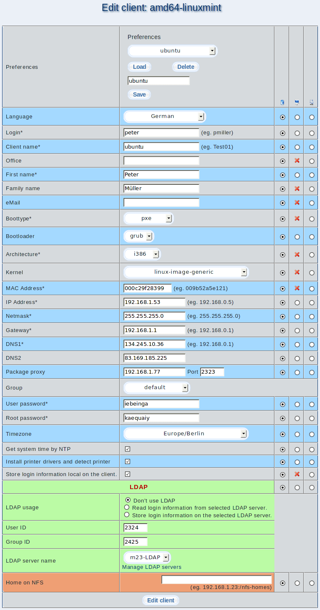

In this dialog you can change the settings of a client. There are the edit lines you may allready know from the ''Add a new client'' dialog and three extra rows. These rows are used to select what should happen with the entered values.

- Left row: Select this row if you want to keep the value that is stored on the client and/or the server.
- Middle row: The changes should be made on the client and transferred to the server afterwards.
- Right row: The value is only written to the database on the server. This is useful if you made changes on client side by hand.
Subsections
root
2016-10-07